The feel
Quake takes you through keeps, castles, dungeons and eldritch realms,1 made of rusted metal and stone, brick arches and gothic churches.2 Sandy Petersen took several of its creatures straight from Lovecraft, and the game ends with one, the Lovecraftian horror Shub-Niggurath.2
It is dark and fast. Players joked about id's love of brown as soon as Quake came out, and John Romero says each id game was darker than the last.2 Like the other 1990s shooters it moves at high speed through labyrinthine levels,3 and Nine Inch Nails scored it with drones and noise instead of tunes, to make it really scary.1
- rust
- runes
- fast
- angular
- lava-lit
- brown on brown
Where it comes from
DOOM (1993), made at id Software under John Carmack and John Romero, popularised the first-person shooter.4 Its engine was pseudo-3D, with the action on a flat plan,5 and Raven's Heretic and Hexen used it for dark fantasy while Duke Nukem 3D (1996) and Blood (1997) joined the wave of Doom clones.3 Quake (1996) moved to true 3D,3 on an engine with six degrees of freedom, with art by Adrian Carmack and Kevin Cloud,5 who painted id's wall textures in Deluxe Paint,6 and a soundtrack by Nine Inch Nails.1 The form came back in 2018, when New Blood released DUSK and Amid Evil, as what players now call the boomer shooter.3
Core elements
Mixed medieval and military settings
Each designer built with his own texture sets, so medieval castles, military bases and weird tech geometry share one game.5 Romero opened every episode in a military base, where a slipgate carries the player into another dimension.2
Earthy 256-colour palette
The 256 colours come as 16 ranges of 16 shades, from fully lit to nearly black, so the engine can shade and light every texture.6,2 The texture themes leaned on earthy tones, so most levels look hewn from browns, greens, greys, blacks and whites.2
Baked light maps
Light is calculated offline into a light map with one value every 16 texels, about two feet in Quake's world, and filtered so shadows fade smoothly.7 Lights can animate through strings of letters from a, dark, to z, double bright,8,9 and in the software renderer fullbright textures shine in the dark.10
Small tiled textures
Textures are small tiles, generally 32 by 32 or 64 by 64, repeated across each polygon, and software Quake picks one of four mip levels for each surface by its distance.7 The first accelerated version added bilinear filtering, which removed most pixel aliasing,7 but thirty years on the visible pixels are the appeal.10
True 3D brush geometry
Quake brought true 3D levels with vertical camera movement,3 built from brushes, solids that are always convex.11 Water became a space you swim through, where DOOM's liquids had been floor textures that hurt you.2
Polygon monsters
id left sprites behind for Quake: monsters, weapons and projectiles are triangle meshes with a front and a back skin.7 Each frame stores every vertex position, with no interpolation, and skins are mapped without perspective correction, so they warp slightly between vertices.7
How to do it
Fix the palette first
Choose the palette before painting anything. id's 256 colours sit in 16 ranges of 16 shades, from fully lit to nearly black, to allow for shading and dynamic light.6 Kevin Cloud set aside ranges for blood, explosions and grey, plus one left empty to fix lighting problems late on, and built most textures from the 12 that remained, because it is too late to change the palette halfway through.6
Paint small tiles by hand
Paint walls by hand, knowing that the engine will scale, light and slant every texture, so none is seen exactly as painted.6 Keep them to small tiles, generally 32 by 32 or 64 by 64,7 with sides in multiples of 16, which Quake requires.12 Start each set with a handful of base textures that fix its style, worked out with the level designer.6
Block out levels to player scale
Draw convex brushes on a grid you can set from 1 to 256 units.11 Size spaces for Quake's player box of 32 by 32 by 56 units and for steps up to 18 units high,13 and leave room to run: the default top speed is 320 units a second.14
Bake and animate the lights
Calculate light offline into light maps with one value every 16 texels, filtered so shadows fade smoothly.7 A light compiler reads the finished map and calculates its light and shadows.15 Place point lights with a linear falloff, where Quake maps default to an intensity of 300, give each a style to animate it, and light outdoor areas from an unseen sun in the sky.15 Quake's styles are strings of letters stepped 10 times a second, with m as normal light,9 such as mmnmmommommnonmmonqnmmo for a flicker.8
Model low-poly monsters
Quake had to show a dozen or more monsters of 300 to 500 polygons each in one scene.7 Paint a front and a back skin, which Kevin Cloud compares to photographing the front and rear of an object,6 and store each frame as a full set of vertex positions with no interpolation.7 id designed Quake II's animation at 10 frames a second.6
Build the soundtrack from drones
Build the music from drones, samples and banged metal, looped in different combinations, and leave out melody: that is how Nine Inch Nails scored Quake.1 Record your own effects. American McGee set off fireworks in pipes and recorded the sound at the other end.1
Cheat sheet
Do
- Match the textures to the sound. American McGee asked for texture sets that mirrored what Nine Inch Nails were bringing to the game.2
- Let lava bring the hot colours. McGee used its reds, yellows and oranges to pop against metal textures.2
- Build contrast into every level: quiet exploration then intense combat, silence then noise, no fear and then total fear.2
- Tuck secrets into the space around big set pieces, as DOOM's designers did.3
- Study the originals up close. Finding no tutorials, David Szymanski pored over the walls and floors of old games and the UVs of Quake's models.16
Avoid
- Sprites for monsters, if you want Quake. When id tried reusing sprite frames, they looked like jerky cardboard cutouts, much like DOOM's sprites, which is what id was trying to avoid.7
- Lighting big polygons per vertex. Gouraud shading gives bland light on large polygons and makes spotlights hard, which is why Quake bakes light maps instead.7
- Letting a modern engine smooth everything. Szymanski's biggest challenge was stopping his engine from making DUSK look better, so he used lower-resolution textures with smaller palettes.17
- The high-poly, PBR-shiny look that asset stores have made normal. Szymanski would rather stand out than tick every box of good graphics.16
- Jumps between settings with nothing to explain them. Romero's planned scenes of going through a slipgate were cut, and players were left puzzled by the leap from military bases to fantasy castles.2
Tools and tutorials
- TrenchBroom
A level editor for brush-based engines such as Quake, with a detailed manual.11
- ericw-tools
Map tools whose light compiler adds sunlight and bounce lighting.15
- func_godot
Try it to use TrenchBroom maps in a Godot project.
- LibreQuake
Study and reuse its free textures and models.
Palette
Sampled from Quake and Hexen. Quake's own 256 colours run in 16 ranges of 16 shades,6 and its software renderer lets fullbright textures shine in the dark.10
Feel the vibe
Listen
Drones and samples rather than tunes. id wanted it really scary and not entirely musical.1
YouTubeEvery DOOM level had a memorable song. For Quake, id wanted something different.1
YouTubeListen for how far the sequel moves from Quake's drones.
YouTubeFrom Blood, one of the 1990s Doom clones.3 Compare its score with Quake's.
YouTubeOfficial upload. Hulshult's DUSK music runs from eerie ambience to heavy industrial metal, aiming for the feeling of first playing Quake.17
YouTube
More references
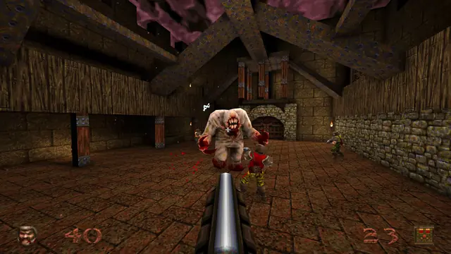
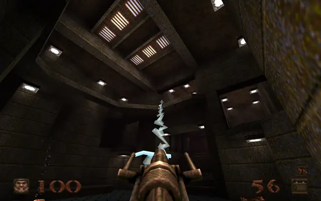
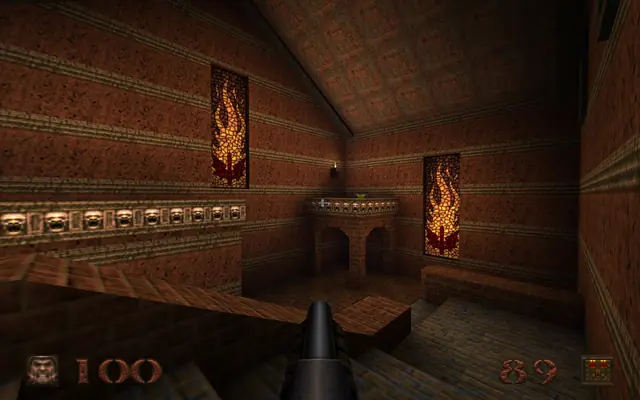
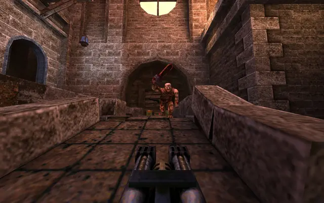
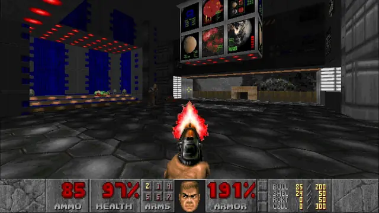
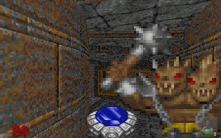
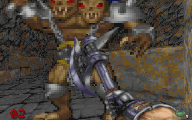
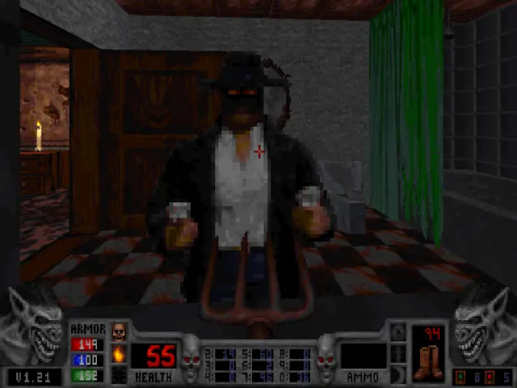
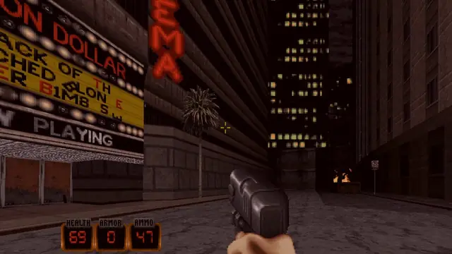
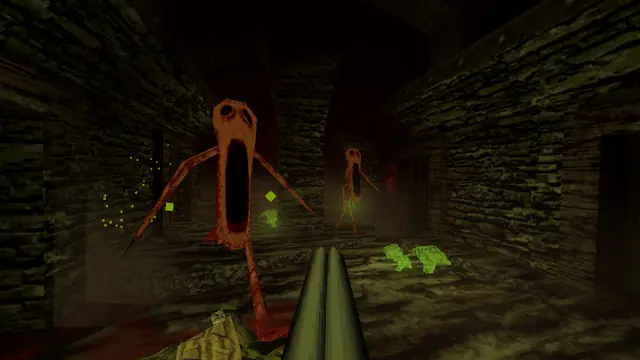
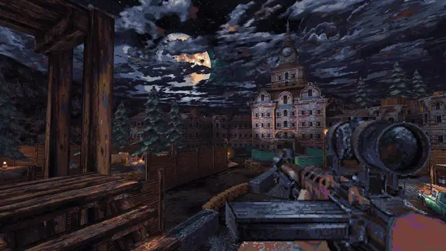
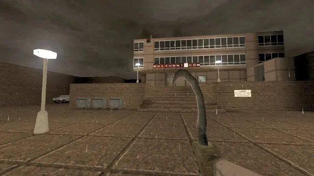
Games
- Quake
The reference for all of it. Study the transitions between metal and stone in episode one.
- DOOM
It popularised the first-person shooter.4 Study its speed, its status bar and its textures.
- Hexen: Beyond Heretic
Raven's dark fantasy on DOOM's engine.3 Study its painted stone.
- Duke Nukem 3D
A 1996 Doom clone, notorious for its humour.3 Study its real-world places.
- Blood
Study its cemeteries and its black humour.
- Quake II
id started the setting over for the sequel6 and added more comprehensive lighting effects.3
- DUSK
One developer's homage to the low-poly, software-rendered look of Quake,16 built in Unity, where its maker used ProBuilder for everything.16
- CULTIC
Study how it puts sprite enemies on low-poly maps under strong lighting.
- HROT
A Quake-inspired shooter by a solo developer, set in 1980s communist Czechoslovakia.18
Film, art and more
- Shub-Niggurath
Quake's final boss, a Lovecraftian horror. Petersen took several of Quake's creatures from Lovecraft.2
- Event Horizon
Study it as a visual parallel: cathedral shapes inside an industrial machine.
- Hellraiser
Study it as another parallel: rust, chains and flesh in one room.
- Quake engine
Why Quake's walls look the way they do: light maps and the surface cache, in Michael Abrash's own words.7
Sources
- 1The Making of Quake, Part 3: Coloring in the Map
- 2The Making of Quake, Part 2: Degrees of Freedom
- 3Inside The Rise Of Boomer Shooters
- 4DOOM
- 5The Making of Quake, Part 1: We are the Wind
- 6Interview with id's Kevin Cloud
- 7Graphics Programming Black Book, Special Edition (chapters 68 to 70, on Quake)
- 8Quake source code: world.qc (light styles)
- 9Quake source code: r_light.c (light animation)
- 10Building a Quake PC: VQuake
- 11TrenchBroom Manual
- 12Quake source code: model.c (texture loading)
- 13QuakeWorld source code: pmove.c (player movement)
- 14Quake source code: sv_user.c (movement speed)
- 15light: calculate lightmap data for a Quake BSP file
- 16More than a throwback: How Dusk nails the best parts of 90s FPS games
- 17Dusk is how you make a '90s shooter for today
- 18Hrot review